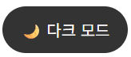

개인 블로그 사이트 개발
1. 개요
제목 : lusalord 블로그
개발 언어 : HTML, CSS, JavaScript
개발 인원 : 1인 개발
깃허브 주소 : https://github.com/lusalord/lusalord-Blog
2. 소개
lusalord 블로그는 제가 개인으로 개발한 블로그 사이트입니다.
이 블로그는 HTML, CSS, JavaScript를 사용하여 개발하였으며,
개인적인 프로젝트와 블로그 글을 공유하기 위한 공간으로 활용하고 있습니다.
블로그의 주요 기능은:
- 포트폴리오 관리
- 블로그 글 작성 및 관리
- 테마 변경 기능
외부 배포 기능은 vercel을 이용하여 배포하였습니다.
3. 개발한 기능
프로젝트 카드
 포트폴리오를 관리할 수 있는 프로젝트 카드 기능입니다.
포트폴리오를 관리할 수 있는 프로젝트 카드 기능입니다.
각 프로젝트 카드를 클릭하면 해당 프로젝트의 상세 내용이 기재된 블로그 페이지로 이동합니다.
테마 변경 기능
 라이트 모드와 다크 모드를 변경할 수 있는 테마 변경 기능입니다.버튼을 클릭 할 시, 원하는 테마로 변경할 수 있습니다.
블로그 글 작성 및 관리
블로그 작성과 관리는 외부의 HTML 파일을 편집하여 관리합니다.4. 소감
처음에는 웹 개발 공부를 위한 작은 프로젝트로 시작하려 하였습니다.
그렇기에 간단한 기능을 목표로 하여 AI 등의 도움을 받지 않는 것이 목표였습니다.
하지만 개발을 진행하면서 점점 프로젝트 규모가 커지게 되어 디테일적인 부분을 보완하기 위해 AI를 사용하였는데
공부용으로 만든 프로젝트 치고는 외부의 도움을 빌린 점이 아쉽기도 합니다.